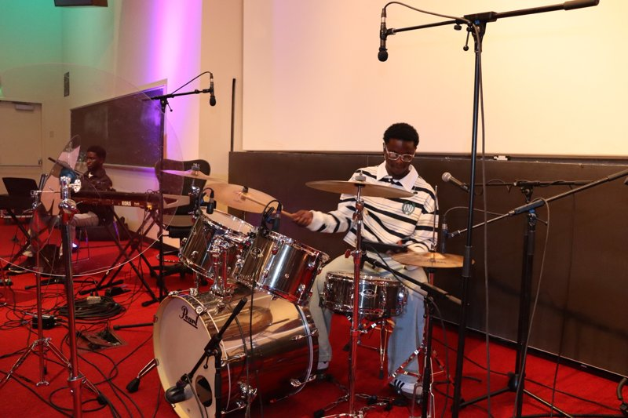

Community and Creativity
The people I show up for, and the things I make.
Work is only part of who I am, because I care about the people around me and I love making things, and this page is about both.
I mentor students, I show up for my campus, and I play drums and make music and films, and I do these things because I love them and they've taught me as much as any job.
Community and Leadership
It started in my junior year, when my counselors asked me to mentor a Black middle schooler at Worcester Academy. Through afterschool tutoring, basketball coaching, and the occasional lunch at the Taco Spot, I gave him the support I needed as an underclassman with no one to confide in.
Today I run Project Access, a youth impact initiative for first-generation and low-income students, because I know what a difference it makes when someone shows you the way.
At any time, I'm working with more than 50 students through group webinars and with 20+ of them one-on-one, and I tailor my guidance to each student's goals. After each session, I collect feedback and track attendance so the next one is better.
I built the curriculum for our financial literacy and career exploration sessions, and I run them in person and online for youth in the U.S. and Africa.
I also help families with college applications, scholarships, and choosing a major, and every September I sit down with seniors to work through their financial aid forms. I connect students to programs like QuestBridge and Thrive so more of them make it to enrollment. I'm a QuestBridge Scholar myself, so this one is personal.
- Mentoring
- Curriculum design
- Financial literacy
- College access
- Public speaking
For two years I led the Black Student Union at Worcester Academy. I was the only Black male in my class for my first two years, so I knew what it meant to have a place where students could just be themselves.
I presented for Black History Month, and I mentored young men of color across the school, which is where my mentoring started.
On campus, I stay close to community, and the Ghanaian Students Association at Cornell feels like a piece of home.
This past summer, I worked full-time as a resident advisor for Cornell's Pre-Collegiate Summer Scholars Program, where I mentored the students and handled the day-to-day work that keeps a residential program on schedule.
Since July, I've also been an Adobe Student Ambassador, where I use storytelling and project planning outside of class.
Creative Interests
Music is a big part of my life, and I'm a co-founder and vice president on the executive board of Sounds of Spirit, a Christian worship group at Cornell, where I play drums, produce music, and lead worship. I play at my church back home too.

It started in the back of a sanctuary, where I thumped rhythms on the seat in front of me every Sunday, and then at home, where I tapped a pencil on my mom's mahogany desk to learn the polyrhythms of Ghanaian praise songs. The pencil became a pair of 5a drumsticks, the desk became a mesh kit in the corner of my mom's room, and a computer chair with no backrest became my throne.
I started on drums and piano at church in 2021, my freshman year, and I later picked up bass guitar. In July 2022, the main drummer was absent and I filled in for an all-night prayer service, and because I had prepared, I earned more chances until I joined the rotation for Sunday services.
Since then I've played the Autumn Bay Prayerfest in Pittsfield, Massachusetts, and filled in as drummer for a church retreat.
I also plan our live events, and for one that meant building a 7 to 9 p.m. program with set segments, lining up a guest speaker from New York, and planning an intermission. Our Praise and Worship night comes around every semester.
We've played board games at intermission, and I've been looking at Kahoot with a prize for the winner, which feels a lot like launching a small product and is fun for me. I'm also building a small music studio in my dorm for gospel production.
One of my favorite songs, Hymn Melody by Onn Gospel, starts with calm harmonies and adds cymbal swells until it erupts into a symphony, and it mirrors my life now. Joe Mettle and Victoria Orenze are on repeat too.
- Drums
- Piano
- Bass guitar
- Music production
- Event planning
I also make films, because cinematic videography lets me tell stories with a camera the way I tell them with words and says what words sometimes can't. I shoot short cinematic pieces about life and faith.
The project closest to my heart is the documentary I made for my senior project on Ghanaian church music, and it's me saying out loud something I once kept quiet, that where I come from is worth celebrating.

- Videography
- Storytelling
- DaVinci Resolve
More About Me
Last thing, since you made it this far, I've babysat for more than five years, for both of my sisters and for other families, and as the oldest I've also been their chef, tutor, chauffeur, and occasional hair-braider. It's some of the most real work I've done, and it keeps me grounded.
When I'm not working, I'm shooting hoops, watching the Celtics, or shopping for clothes.
If you'd like to say hi, my email is at the bottom of the page.
Back to My Story